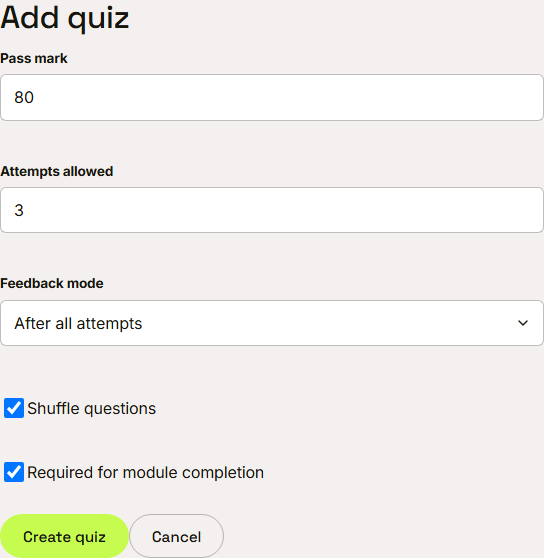
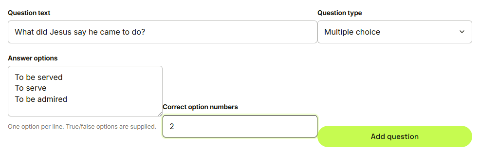
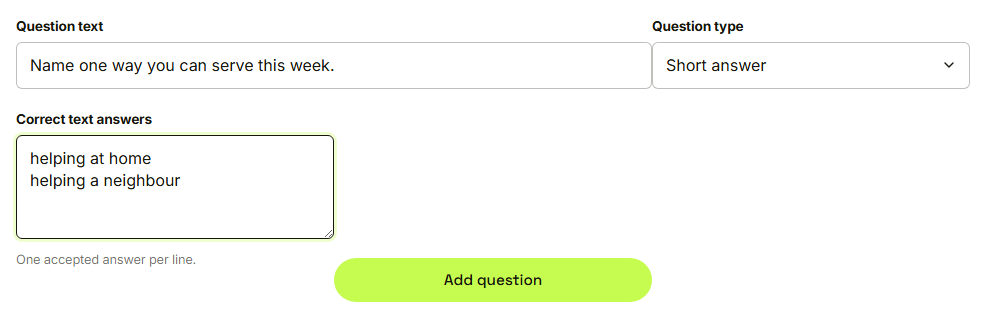
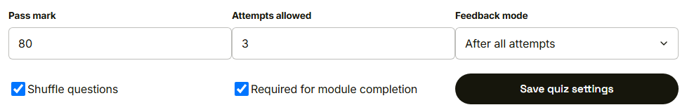

Waypoint · Video 048
Authoring quizzes
Rules, typed questions and correct answers
The quiz rules

Pass mark, attempts, feedback, shuffle
Multiple choice

The correct option is marked by number
Short answer

One accepted answer on each line
Rules can be saved again

Scores use exactly what was saved
Things to remember
Pass mark, attempts, feedback, shuffle, required
Four question types
The author sets every correct answer
Questions can be reordered